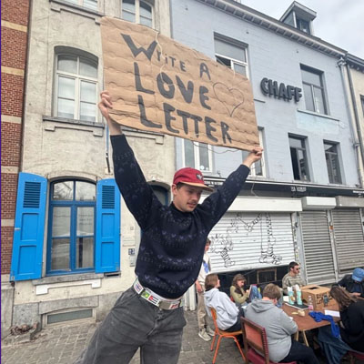

LETTRES D'AMOU DES MAROLLES
by RITCs students
open studio
"Lettres D'amour des Marolles" is a project initiated by art students in Brussels, inspired by a box of love letters exchanged between Marianne and Alain, discovered at the Vossenplein / Place du Jeu de Balle. This iconic square, a treasure trove of memories, holds countless histoires d'amour that have been lost over time.
With this project, we invite people to revive the tradition of love letters: writing to people, places, or things they have loved or still love. It's an ode to the love letter itself, a timeless form of intimate expression. Ultimately, this initiative will grow into an archive of micro-histories, weaving together personal narratives of love through conversation and writing (in different languages).
In an age where digital communication dominates, Lettres d'Amour des Marolles reconnects us with the authenticity and beauty of handwritten words. Yet, it also embraces technology by exploring how love letters can find a place in the digital worlds - through virtual archives.
Thursday, 3rd of April 2025, 10-13h
@Trait d'Union, Rue de l'Hectolitre 3, Brussels
website
-
lettresamourmarolles.webnode.be/
more info about the event:
-
Greetings,
Jorre Aelbrecht, Milan Claeys, Noé De Keukelaere, Fons Dumont, Nora Festjens, Janis Goethals, Cosette Heuberger, Yanni Loenders, Willem Loobuyck, Nash Vandevelde + Projectcoach Julia Clever